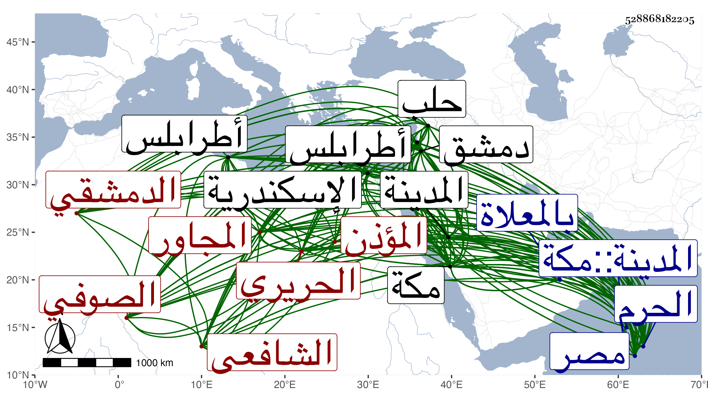

0902Sakhawi.DawLamic.ITO20230111-ara1.EIS1600.528868182205
Biography ID: 528868182205
إبراهيم بن محمد بن صديق ويدعى أبا بكر بن إبراهيم بن يوسف برهان الدين الدمشقي الشافعي الصوفي المؤذن بالجامع الأموي بدمشق الحريري أيضا نزيل الحرم بل يقال له المجاور بالحرمين ويعرف بابن صديق بكسر الصاد المهملة وتشديد الدال المهملة وآخره قاف وبابن الرسام وهي صنعة أبيه وربما قيل لصاحب الترجمة الرسام وكان أبوه أيضا بواب الظاهرية بدمشق . ولد في آخر سنة تسع عشرة وسبعمائة أو أول التي تليها وهو الذي أخبر به وقول بعضهم في الطباق المؤرخة سنة خمس وعشرين أنه كان في الرابعة قال الأقفهسي أنه غلط صوابه في الخامسة بناء على ما أخبر به ونشأ بها فحفظ القرآن وشيئا من التنبيه بل قال البرهان الحلبي عنه أنه حفظه في صغره قال وكان يعقد الأزرار ويؤذن بجامع بني أمية ودخل مصر والاسكندرية وسمع على الحجار والتقي بن تيمية والمجد محمد بن عمر بن العماد الكاتب وأيوب الكحال والشرف بن الحافظ وإسحاق الآمدي والمزي والبرزالي وآخرين تفرد بالرواية عن أكثرهم وأجاز له ابن الزراد وأسماء ابنة صصرى والبدر بن جماعة وإبراهيم بن أحمد بن عبد المحسن الغراقي والختني والواني وابن القماح وأبو العباس المرادي وخلق من الشاميين والمصريين وعمر دهرا طويلا مع كونه لم يتزوج ولا تسري وأكثر المجاورة بمكة والحج منها ست سنين متصلة بموته تنقص تسعة وأربعين يوما ومنها خمس سنين أولها سنة إحدى وتسعين وغير ذلك وكذا جاور بالمدينة وحدث بهما وبدمشق انقضاء الحج من سنة ست وتسعين وغير ذلك وكذا جاور بالمدينة وحدث بهما وبدمشق وطرابلس وحلب وكان دخوله لها في سنة ثمانمائة وقرئ عليه البخاري فيها أربع مرار وبمكة أزيد من عشرين مرة سمع عليه الأئمة كالبرهان الحلبي وابن ظهيرة والتقي الفاسي وشيخنا لقيه بمكة وأخذ عن خلق ممن سمع عليه سوى شيخنا كالشرف المراغي والشهاب العقبي وآخر من روى عنه بالحضور أم حبيبة زينب ابنة أحمد الشوبكي فإنها عاشت إلى سنة ست وثمانين وآخر من روى عنه بالإجازة على حفيد يوسف العجمي وألحق جماعة من الأصاغر بالأكابر وكان خيرا جيدا مواظبا على الجماعات متعبدا نظيفا لطيفا يستحضر الكثير من المتون ونحوها من تكرار القراءة عليه بحيث يرد بها على مبتدئي الطلبة ومما سمعه على الحجار البخاري ومسند الدارمي وعبد وفضائل القرآن لأبي عبيد وأكثر النسائي وغيرها من الكتب الكبار وجزء أبي الجهم وغيره وعلى ابن تيمية طرق زرغبا تزدد حبا . مات بمكة في ليلة الأحد سابع عشر شوال سنة ست بمنزلة رباط ربيع بأجناد منها ودفن من صبيحتها بالمعلاة وله خمس وثمانون سنة وأشهر ممتعا بسمعه وعقله رحمه الله وإيانا . ذكره شيخنا في معجمه وأنبائه والتقي الفاسي في تاريخ مكة وقال أنه كان أسند من بقي في الدنيا مع حسن الفهم لما يقرأ عليه وله إلمام بمسائل فقهية وربما يستحضر لفظ التنبيه إلا أنه صار بأخرة يتعلم ... كثيرا ويرد ما لا يتجه رده وربما أخطأ في الرد ويلج في القراءة بما يحفظه لكون اللفظ الذي حفظه يخالف لفظ الرواية المقروءة إلى غير ذلك مما بسطه قال وكان شديد الحرص على أخذ خطه بالإجازة أو التصحيح وعلى الأخذ على التحدث لفقره وحاجته قال وله حظ من العبادة والخير والعفاف مع كونه لم يتزوج قط على ما ذكر ومتعه الله بحواسه وقوته بحيث كان يذهب إلى التنعيم ماشيا غير مرة آخرها في سنة موته ولم يزل حاضر العقل حتى مات قال وكان صوفيا بالخانقاه الأندلسية بدمشق ومؤذنا بجامعها الأموي وعانى بيع الحرير في وقت على ما ذكر وأطال في ذكر مسموعه وشيوخه بالسماع والإجازة . وكذا ذكره في ذيل التقييد وقال الأقفهسي في معجم ابن ظهيرة وكان صالحا خيرا متعبدا وذكره المقريزي في عقوده باختصار رحمه الله .
